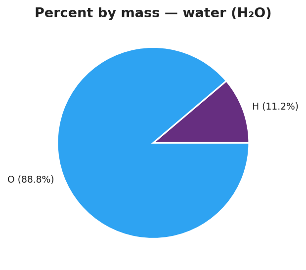

01 Phenomenon
Two fertilizer bags sit on the demonstration table. Both advertise “nitrogen” on the label. Both are applied at the same rate — same number of scoops per square foot. One grows noticeably greener, healthier grass than the other. The labels look almost identical. The difference is hidden in the chemistry.
02 Driving question
How can we tell what a compound is made of — and how much of each element — without taking it apart?
03 Notice & wonder
| I notice… | I wonder… |
|---|---|
Turn & Talk #1: Look at the water pie chart your teacher is projecting.

Water has two hydrogen atoms per molecule and only one oxygen atom — but oxygen’s slice is much larger. In one sentence, explain why one oxygen atom outweighs two hydrogen atoms in the pie chart.
04 Initial model
Before your teacher names the formula: use the water pie chart above to answer the following.
The whole pie represents the gram formula mass of water: 18 g/mol. Hydrogen’s contribution to the GFM: 2 g/mol. Oxygen’s contribution to the GFM: 16 g/mol.
What fraction of the total mass is hydrogen? Write it as a division: ___ ÷ ___ = ___
Multiply that fraction by 100 to get a percent: ____%
What fraction of the total mass is oxygen? Division: ___ ÷ ___ = ___
Multiply by 100: ____%
Add your two percents: ____% + ____% = ____% Does this make sense? Why?
05 Investigate
Part 1 — ABCs: Predict before you calculate
Before calculating anything, look at the four formulas below. Rank them 1–4 by predicted percent oxygen (most oxygen by mass = 1; least = 4). Base your prediction on the formula alone.
| Compound | Formula | My predicted rank for % oxygen |
|---|---|---|
| Carbon dioxide | CO₂ | |
| Water | H₂O | |
| Table salt | NaCl | |
| Ammonia | NH₃ |
After you complete Part 2, return and check: was your prediction correct? What surprised you?
After checking: _______________________________________________
Part 2 — BTC thin-slice (group work at vertical surface)
Your teacher will assign you to a random group and a vertical surface. As a group, solve the following — show all work on the vertical surface:
A compound has a gram formula mass of 44 g/mol. Carbon contributes 12 g/mol; oxygen contributes 32 g/mol.
Percent carbon by mass: ___ ÷ ___ × 100 = ____%
Percent oxygen by mass: ___ ÷ ___ × 100 = ____%
Sum of percents: ____% + ____% = ____%
After the debrief — what compound was it? _______________
Part 3 — Individual calculation practice
Calculate the percent composition of each element in the compounds below. Use the formula: % element = (n × atomic mass ÷ GFM) × 100. Show every step.
Compound A: H₂O (verify with the pie chart above)
GFM of H₂O: ______ g/mol
| Element | n (subscript) | Atomic mass (g/mol) | n × atomic mass | ÷ GFM | × 100 = % by mass |
|---|---|---|---|---|---|
| H | 2 | ||||
| O | 1 |
Sum of percents: ____% + ____% = ____% Does it match the pie chart? ______
Compound B: CO₂ (verify with your BTC answer)
GFM of CO₂: ______ g/mol
| Element | n (subscript) | Atomic mass (g/mol) | n × atomic mass | ÷ GFM | × 100 = % by mass |
|---|---|---|---|---|---|
| C | 1 | ||||
| O | 2 |
Sum of percents: ____% + ____% = ____%
06 Make it make sense
For each problem below, calculate the percent composition of every element. Show your full table. These compounds are different from the Exit Ticket — work carefully.
1. Carbon dioxide, CO₂
GFM (calculate or use above): ______ g/mol
| Element | n | Atomic mass (g/mol) | n × at. mass | ÷ GFM | % by mass |
|---|---|---|---|---|---|
| C | 1 | ||||
| O | 2 |
% C = ______ % O = ______ Sum = ______
2. Sodium chloride (table salt), NaCl
First, calculate GFM of NaCl:
| Element | Atomic mass (g/mol) | Subscript | Mass contribution |
|---|---|---|---|
| Na | 1 | ||
| Cl | 1 | ||
| GFM | ______ g/mol |
Now calculate percent composition:
| Element | n × at. mass | ÷ GFM | % by mass |
|---|---|---|---|
| Na | |||
| Cl |
% Na = ______ % Cl = ______ Sum = ______
3. Comparing nitrogen-rich compounds — which fertilizer is richer in nitrogen?
You have two compounds: ammonia (NH₃) and ammonium nitrate (NH₄NO₃). Your job: calculate the percent nitrogen by mass in each, then decide which delivers more nitrogen per gram.
Ammonia, NH₃:
GFM of NH₃:
| Element | Atomic mass (g/mol) | Subscript | Mass contribution |
|---|---|---|---|
| N | 1 | ||
| H | 3 | ||
| GFM | ______ g/mol |
% N in NH₃ = (1 × ____) ÷ ______ × 100 = ______%
Ammonium nitrate, NH₄NO₃:
GFM of NH₄NO₃:
| Element | Atomic mass (g/mol) | Subscript | Mass contribution |
|---|---|---|---|
| N | 2 | ||
| H | 4 | ||
| O | 3 | ||
| GFM | ______ g/mol |
% N in NH₄NO₃ = (2 × ____) ÷ ______ × 100 = ______%
Which compound is richer in nitrogen by mass? _______________
In one sentence, explain what this means for the fertilizer phenomenon at the start of the lesson:
07 Key vocabulary
- percent composition
- the percentage by mass of each element in a compound; calculated as (n × atomic mass of element ÷ gram formula mass of compound) × 100, where n is the subscript of the element in the formula; a fixed property of the compound that does not change with sample size
- gram formula mass
- the mass of one mole of a compound (g/mol), revisited from Lesson 06 as the denominator in every percent-composition calculation; found by summing (atomic mass × subscript) for all elements in the formula; represents the "whole pie" against which each element's mass is compared
- mass ratio
- the ratio of one element's mass contribution to the total mass (GFM) of the compound, expressed as a decimal between 0 and 1; multiplying the mass ratio by 100 converts it to percent composition; for hydrogen in water, the mass ratio is 2/18 = 0.111, giving a percent composition of 11.1%
Use each term in a sentence about today’s investigation. Do not copy the definition — describe something you actually did or observed.
percent composition: _______________________________________________ _______________________________________________
gram formula mass: _______________________________________________ _______________________________________________
mass ratio: _______________________________________________ _______________________________________________
08 Revise your model
Return to your Initial Model (the water pie chart fractions you calculated at the top of this worksheet). Add vocabulary labels:
Circle the denominator in your calculation. Label it “gram formula mass.”
Circle the numerator (element’s mass contribution). Label it “n × atomic mass.”
Circle the final percent. Label it “percent composition.”
Write a revised appositive sentence:
The percent composition of hydrogen in water — % — is calculated by dividing ____________________________________________ by _______________________________________________.
Then finish this Because / But / So sentence:
Urea (CO(NH₂)₂) grows greener grass than ammonium nitrate (NH₄NO₃) at the same application rate because __________________________________________, but __________________________________________, so __________________________________________.
09 Exit ticket
For magnesium oxide, MgO — first calculate its gram formula mass using the Periodic Table (Mg = 24 g/mol, O = 16 g/mol), then answer (a)–(c).
GFM of MgO: ___ + ___ = ______ g/mol
(a) What is the percent by mass of Mg in MgO? Show your setup.
% Mg = ( ___ × ___ ) ÷ ___ × 100 = ______%
(b) What is the percent by mass of O in MgO? Show your setup.
% O = ( ___ × ___ ) ÷ ___ × 100 = ______%
(c) In one sentence, why do the two percentages add up to 100%?
10 Explore further
- Percent-composition calculation from formulas: Using the 2025 Reference Tables, students apply % element = (n × atomic mass ÷ GFM) × 100 to a sequence of compounds. Each student shows the setup in a structured table: element | mass in formula (n × atomic mass) | GFM | percent. Connects directly to the fertilizer and iron-supplement phenomena.
- Percent water in a hydrate (optional wet lab): Pre-weigh a sample of a copper sulfate hydrate (CuSO₄ · 5H₂O). Heat to drive off the water of crystallization. Reweigh. Calculate percent water by mass using (mass lost ÷ original mass) × 100. Connects the formula-based calculation to an experimental determination.
- Percent water in popcorn (low-infrastructure alternative): Weigh unpopped kernels, pop them (microwave or hot plate with foil pouch), reweigh the popped corn. The mass lost is the water that escaped as steam. % water = (mass lost ÷ original mass) × 100. Edible, culturally accessible, zero safety hazard.